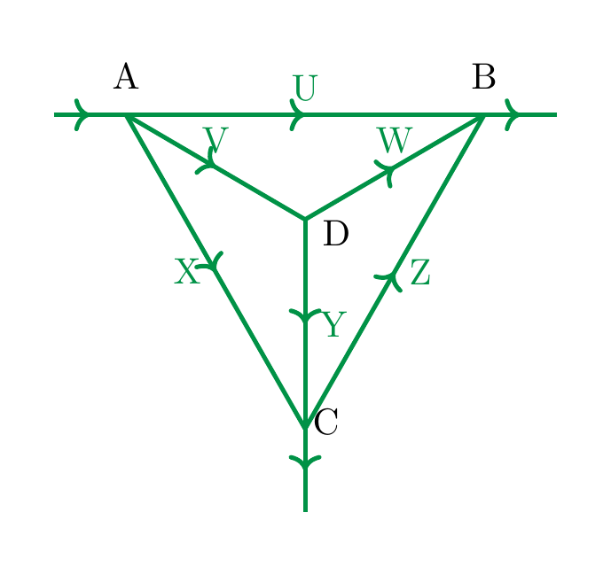

Exercises
Exercise 2.1
(See Solution 2.1.) Describe all the solutions of the equation
Draw a picture of that solution set. Is it a homogeneous equation?
Exercise 2.2
(See Solution 2.2.) Consider the equation
What is its solution set?
Consider the same equation, but now with two variables \(x\) and \(y\) being present (so we could rewrite the equation as \(x + 0 \cdot y = 3\) in order to emphasize the presence of \(y\)). What is the solution set this time?
Exercise 2.3
(See Solution 2.3.) Consider the system
What is the matrix associated to that system? Using Method 2.31, find all solutions of that system.
Exercise 2.4
(See Solution 2.4.) Consider the (augmented) matrix
What type of matrix is that? (I.e., what \(m \times n\)-matrix.) If \(A = (a_{ij})\), what is \(a_{13}\) and \(a_{31}\)? What is the linear system associated to that matrix? (Hint: one equation reads “\(\dots = 3\)”. For consistency, call the variables \(x_1, x_2, \dots, x_6\).)
Is the matrix in row-echelon form? Is it in reduced row-echelon form? If not, use the Gaussian algorithm (Method 2.29) in order to transform it into reduced row-echelon form. Name the columns which contain a leading 1 (Hint: there are 4 of them). Which variables are free, which variables are not free? Use Method 2.31 and solve the linear system associated to that augmented matrix.
Exercise 2.5
(See Solution 2.5.) Using Method 2.31, find all solutions of the following systems
and
Exercise 2.6
(See Solution 2.6.) Let
be a linear equation. For which values of \(a\), \(b\) and \(c\) does this equation have no solution? For which values of \(a\), \(b\) and \(c\) does it have infinitely many solutions?
Exercise 2.7
(See Solution 2.7.) Compute the reduced row-echelon form of the matrices associated to the linear systems in Example 2.8, Example 2.10 and Example 2.11.
Exercise 2.8
(See Solution 2.8.) Consider the system
where \(b\) is a real number. What is its solution set? Illustrate the system geometrically for \(b = 0\) and for \(b=1\).
Exercise 2.9
(See Solution 2.9.) Consider the system
Here \(x\) and \(y\) are the variables and \(a\) and \(b\) are the coefficients.
-
For which values of \(a\) and \(b\) does the system above have no solution?
-
For which values does it have exactly one solution?
-
For which values does it have infinitely many solutions?
Explain your findings algebraically and geometrically.
Exercise 2.10
(See Solution 2.10.) Find the solutions of the system
Exercise 2.11
(See Solution 2.11.) The linear system in the variables \(x_1, x_2, x_3, x_4\) associated to the matrix
has only one solution. Find it!
Exercise 2.12
(See Solution 2.12.) Find the solutions of the following linear system in the variables \(x_1, \dots, x_4\):
Exercise 2.13
(See Solution 2.13.) Solve the following linear system, where \(h\) is a parameter, and \(x, y\) are the unknowns:
For selected values of \(h\), illustrate the solution set graphically.
Exercise 2.14
(See Solution 2.14.) For any \(t \in {\bf R}\) consider the homogeneous linear system associated to the matrix
-
Solve the system for \(t = 0\).
-
Solve the system for all \(t \in {\bf R}\).
Exercise 2.15
(See Solution 2.15.) Solve the system
Exercise 2.16
(See Solution 2.16.) Consider the linear system (in the unknowns \(x_1, x_2, x_3\)):
Is there any \(t \in {\bf R}\) such that \((1-t,2+3t,4t)\) is a solution of that system?
Exercise 2.17
(See Solution 2.17.) Consider the following linear system (in the unknowns \(x_1, x_2, x_3\)):
Show that there is exactly one \(t \in {\bf R}\) such that the vector \((3+t, 2+t, \frac 23 + t)\) is a solution of that system.
Exercise 2.18
(See Solution 2.18.) Do there exist \(q, t \in {\bf R}\) such that the vector
satisfies
Exercise 2.19
(See Solution 2.19.) Find a polynomial
such that \(p(1) = 0\) and \(p(2) = 3\). Is there a unique such polynomial?
Exercise 2.20
(See Solution 2.20.) Find the solution of the linear system associated to the following augmented matrix:
Exercise 2.21
(See Solution 2.21.) For any \(\alpha \in {\bf R}\) find the solutions of the system associated to the matrix
Exercise 2.22
(See Solution 2.22.) Consider the following linear system in the unknowns \(x, y, z\), which depends on the parameter \(\alpha \in {\bf R}\):
Determine the solution set of this system for each value of \(\alpha\).
Exercise 2.23
(See Solution 2.23.) The following extended exercise showcases the usage of linear algebra in network analysis. An idealized city consists of the following streets \(U\) to \(Z\), with four intersection points \(A\) to \(D\). The streets are all one-way streets:

At the point labelled \(A\), 500 cars per hour drive into the city, and at \(B\), 400 cars exit the city, while at \(C\) 100 cars exit the city per hour.
Describe the possible scenarios regarding the numbers of cars driving through the streets \(U\), \(V\), \(W\), \(X\), \(Y\) and \(Z\).
Exercise 2.24
(See Solution 2.24.) For any \(\lambda \in {\bf R}\) solve the system (in the unknowns \(x_1, x_2, x_3\))